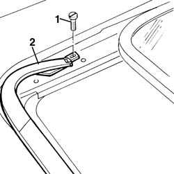
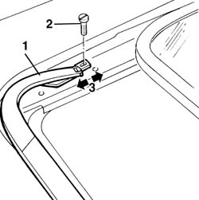

7030B42 sliding roof spoiler - r+r
- Path
- Procedures > 70 FITTINGS > 7030 SUN ROOF AND HOOD > 7030B sliding roof > 7030B42 sliding roof spoiler - r+r
- Kind
- repair procedure (removal / refitting; the operation number is the code)
- Applies to
- all engines; all production periods
- Interactive page
- https://sloeber94.github.io/elrnDB-a156/en/#/3238763
Applies to: all engines; all production periods
 Removing
Removing
 Refitting
RefittingPlace the trasparent in the open position
1. Loosen the spoiler fixing screws.
2. Remove the spoiler.

Applies to: all engines; all production periods
Refitting
Removing1. Replace the spoiler.
2. Tighten the spoiler fixing screws
3. Record the alignment of the spoiler with the anterior outline of the sliding roof compartment
Verify that the spoiler do not interfere with the panel and the trasparent
The arrows show all possible movements

Applies to: all engines; all production periods
Loosen the fixing screws
Verify the functionality of the spoiler actioning the sliding roof in opening and closing